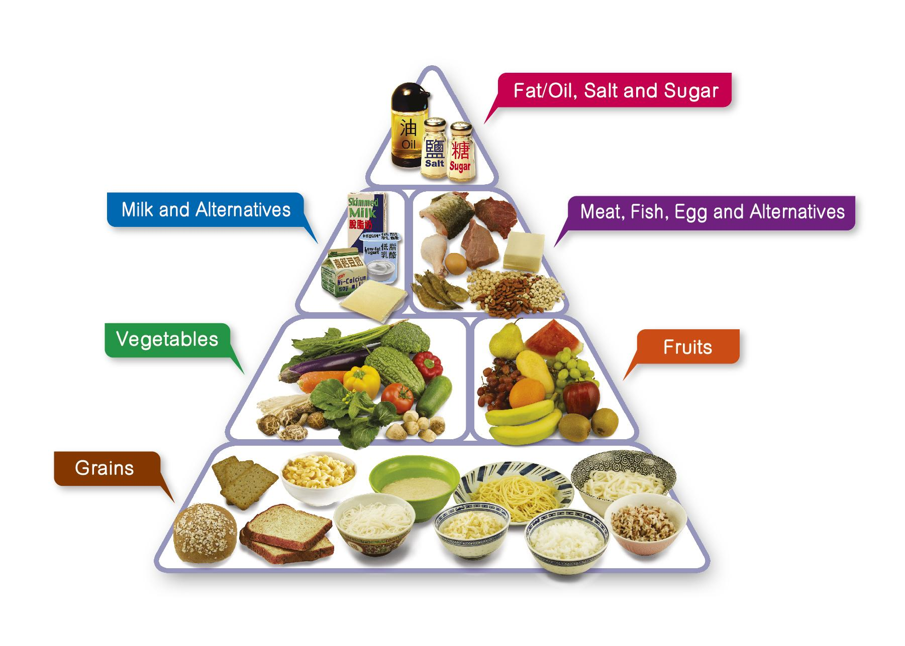
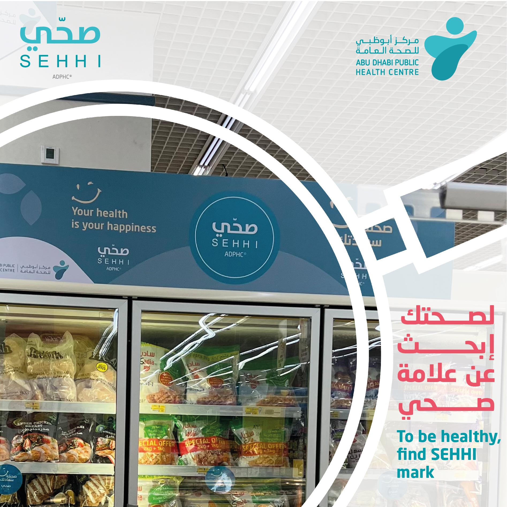
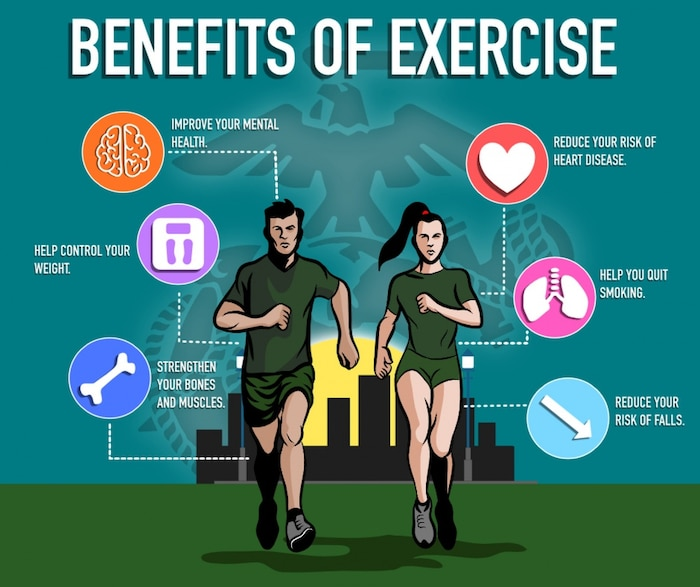

Reasons that help youngsters lead an unhealthy life:
- One of the problems of eating unhealthy food is that it gives weight problems to children and that causes an addiction. Over time, it can result in several chronic health problems, asthma, cystic fibrosis, congenital heart disease, diabetes
- Most children nowadays are not getting enough exercises and the results are unbelievable. Children spend most of their time on their smartphones, playing games, watching TV or searching in a web browser.
- For most children today, their diet is made up of fast foods and junk food. They are constantly eating burgers, pizzas, sweets and carbonated drinks. The nutrition is removed and what is needed for the child for a good diet is homemade foods, vegetables and fruits.
Develop strategies that promote healthy nutritional choices for self and others; e.g. adopt goals that reflect healthy eating, encourage placement of nutritious food in vending machines:
- Family meals are a comforting ritual for both parents and kids. Children like the predictability of family meals and parents get a chance to catch up with their kids. Kids who take part in regular family meals are also:
- less likely to snack on unhealthy foods
- less likely to smoke, use marijuana, or drink alcohol
- Stock Up on Healthy Foods
- Kids, especially younger ones, will eat mostly what's available at home. That's why it's important to control the supply lines — the foods that you serve for meals and have on hand for snacks.
Ways of encouraging friends of family towards a healthy lifestyle:
- Eating 5 servings of fruits and veggies.
- Eat enough protein per day; around 0.8 g/kg of body weight
- Spend at least 1 hour a day of being active with friends and family; this doesn't have to be at the gym, it can also be doing collaborative activities together such as playing your favorite sport.
- Adding friends and family on calorie tracking apps; this way, they can keep up with each other's achievements, while pushing each other to greater heights.
- Limit screen time and interact more with family and friends
- Buy a healthy recipe cookbook; this can provide access to an wide selection of nutritious but healthy foods, which makes it easier to cook a healthy meal at home and make it a regular habit
- 
A programme in the UAE that promotes a healthy lifestyle:
- This programme is launched by the Abu Dhabi Public Health Centre; its aim is to increase access to healthy food options, and to encourage the community to consume healthier food.
- It does this by easing the process of exposing nutritious foods in many places where the ingredients may be unknown, such as: food outlets, restaurants, cafes, healthcare facilities, supermarkets
- There are three sub-programmes which have been included in the SEHHI programme: 'SEHHI on Health Menus', 'Displaying Calories on the Menu', and 'SEHHI for Healthy Groceries and Supermarkets'
- 'SEHHI on Health Menus', this makes identifying menu items with low fat, sugar, salt, and high fiber contents easier by placing the SEHHI logo on them
- 'Displaying Calories on the Menu', which obliges the inclusion of the calorie count of food menu items
- 'SEHHI for Healthy Groceries and Supermarkets', this programme encourages the promotion of healthy food and ingredients across supermarkets and grocery stores.
- 
5 aspects of a healthy lifestyle:
- Sleep: sleep is a period of rest which is made up of rapid eye movement (REM) and non-REM sleep. Sleeping 7-9 hours improves your brain function, mood, and health. Sleep deficiency is linked to chronic health problems and raises the risk of many diseases and disorders.
- Diet: Healthy diet protects against malnutrition while unhealthy diet is one of the leading global risks to health. Governments have an important role in creating a healthy food environment and so do parents.
- Relaxation, some activities to relax: listening to relaxing music, meditation, walks in the nature, massgaes, reading, and watching the stars.
- Exercise, lack of exercise: obesity, heart disease, high blood pressure
- You need 30 minutes of moderate-intensity cardio five days per week or 25 minutes of vigorous aerobic activity three days per week. Between 2 p.m. and 6 p.m is optimal, but you could exercise anytime you are comfortable with. Eat a meal rich in carbohydrates and protein within two hours of your exercise session and eat after the session.
- Social health, ability to form relationships with others and act appropriately in different social situations.
- importance of social health: allows gives you the ability to connect with others, lower risk of mental and physical health problems, having a supportive social network when in trouble, gives comfortable in social situations.
- How to improve: notice how people influence you, share your feelings, and tell others you borders
- Benefits: lower rates of anxiety and depression, higher self-esteem, and greater empathy
- 